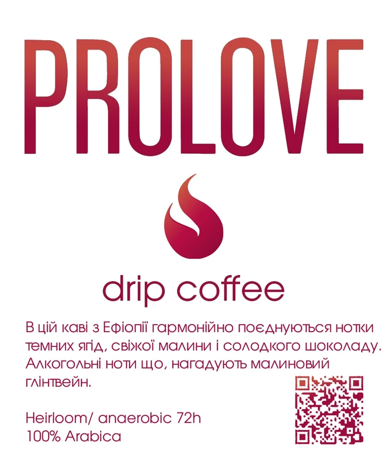

Відкриваємо пакет
На дріпі є засічка зверху — праворуч або ліворуч. Усередині герметичний фільтр із 12 г свіжообсмаженої меленої кави. Азот і щільний пакет бережуть свіжість без кисню.
Хоч удома, хоч у потязі, хоч на висоті 2000 м. 2–2,5 хвилини, гаряча вода і трохи уважності.
12 г · 95–98°C · 200 г
з вагами і секундоміром
На дріпі є засічка зверху — праворуч або ліворуч. Усередині герметичний фільтр із 12 г свіжообсмаженої меленої кави. Азот і щільний пакет бережуть свіжість без кисню.
Відриваємо верхню стрічку по лінії «Open», розкриваємо «вушка» фільтра і кріпимо його на чашці або склянці.
Термочайник — нагрій до 95–98°C. Звичайний чайник — доведи до кипіння й зачекай приблизно 1 хвилину.
Став чашку з дріпом на ваги, обнули їх. Секундомір запускай разом із першим вливанням.
Чекаємо 30–40 секунд. Це дегазація: кава виділяє CO₂ і готується до екстракції. Витримай цей етап — від нього залежить смак.
Чекаємо, поки вода майже пройде, але на поверхні лишається близько сантиметра. Вода має весь час працювати на екстракцію.
Доливаємо до загальної ваги 190–200 г і даємо воді повністю пройти.
Коли у фільтрі не лишилось води — обережно зніми дріп. Перемішай ложкою або круговими обертаннями й дай каві трохи охолонути: смак стає м'якшим і глибшим.
без ваг — орієнтуємось по фільтру
DRIP, чашку або термочашку, гарячу воду 95–98°C, секундомір. Ложка — за бажанням: можна розмішати й обертанням чашки (нам так подобається більше). І рівна поверхня — щоб дріп не перекинувся.
1. До половини фільтра (~40 мл), чекаємо 30–40 с. 2. До верху — чекаємо, поки лишиться ~1 см. 3. Знову до верху і знову до ~1 см. 4. Доливаємо ще ~1 см — і даємо стекти.
Вода щойно закипіла? Хай постоїть не більше хвилини. Краще гарячіша, ніж холодніша: від температури залежать яскравість і солодкість.
На висоті ~1500 м вода закипає вже при 94–95°C. Добре закип'яти — і одразу заварюй, не даючи охолонути. Холодно надворі — тримай воду на пальнику на слабкому вогні.
Переконайся, що вода від провідника справді гаряча — не менше 95°C. Не довіряй заварювання свого дріпа іншим: тепла вода дає «порожню» каву без аромату й балансу.
тоді кава вийде водяниста — ось що перевірити
Якщо вода пролетіла крізь дріп за кілька секунд — найчастіше вона захолодна. Підкаже піна після першого вливання: коричнева й дрібна, як крем, — усе добре. Біла і з великими бульбашками — вода захолодна: перевір температуру.
Кава у фільтрі весь час має бути під водою. Стекло все, а ти ще не долив — кава підсихає, і смак стає пласким.
Стікає швидко — лий частіше й потроху. Так ти розтягнеш час заварювання, і кава встигне віддати смак.
щоб було смачно і відповідально
Не відкривай заздалегідьКава втрачає аромат на повітрі.
Не заварюй вдругеПовноцінного смаку вже не буде.
Не як чайний пакетикНе занурюй у воду — тільки пролив зверху.
Не в широку чашкуНадто широка чи низька — дріп злетить або впаде.
Не лишай дріп у чашціСмак стане гірким і невиразним.
Не холодна водаБуде кисло, водянисто, без аромату.
Не смітимо в природіУ горах і біля річок — забирай дріп із собою.
DRIP — це не просто швидка кава. Це повноцінний кавовий досвід, який можна взяти з собою куди завгодно. Насолоджуйся й відкривай нові смакові грані!
PROLOVE · Кава вогонь